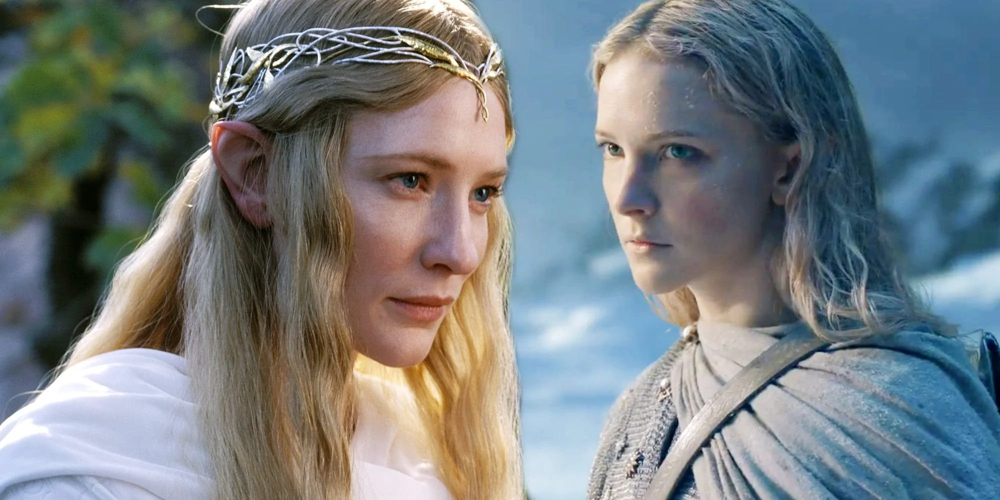
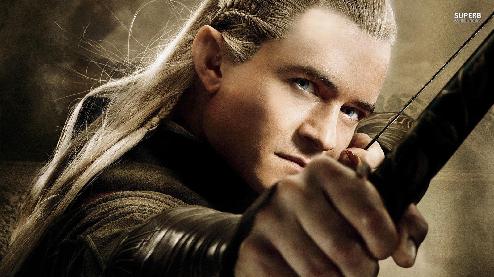
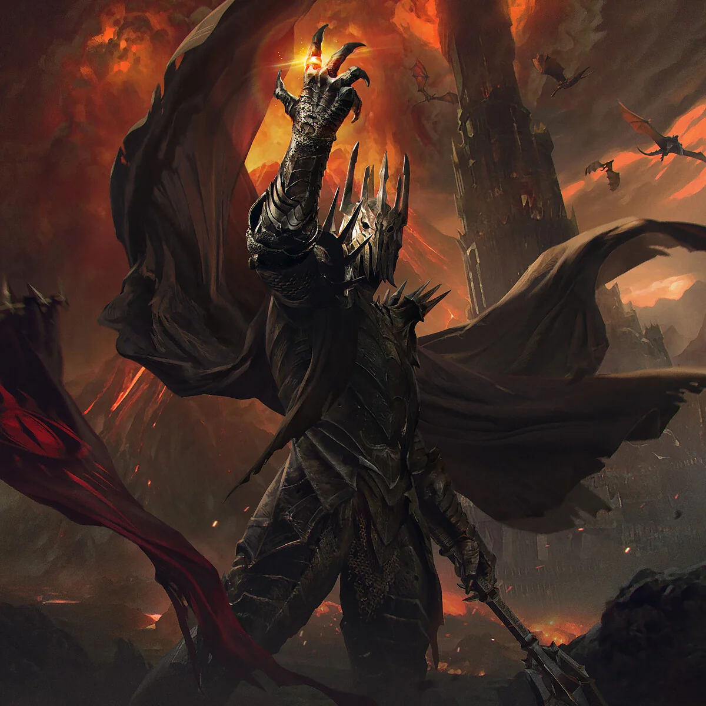
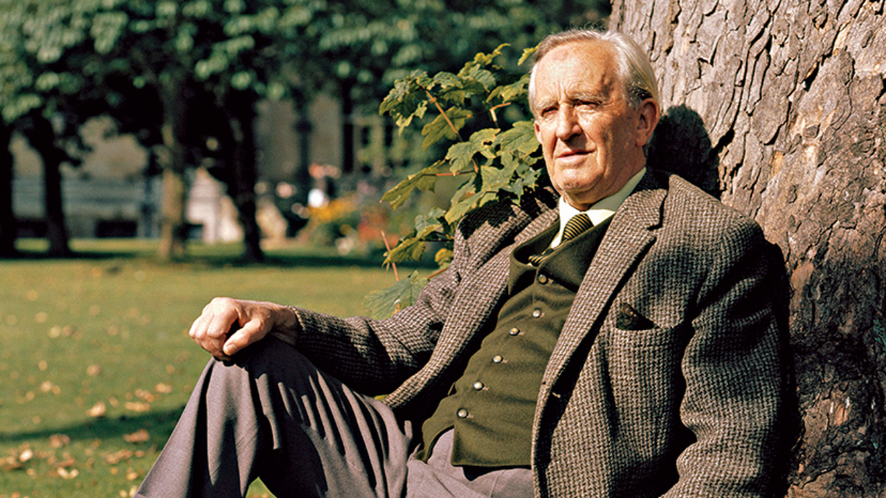

Lord Of The Rings

Welcome to the World of Middle-earth: A Journey Through "The Lord of the Rings"
Step into the enchanting realm of J.R.R. Tolkien's "The Lord of the Rings," a timeless epic that has
captivated hearts and minds since its publication. This website is your gateway to exploring the rich
landscapes, unforgettable characters, and profound themes that make Tolkien's work a cornerstone of
fantasy literature. From the tranquil Shire to the fiery depths of Mount Doom, join us as we delve into
the intricate lore, compelling stories, and the enduring battle between good and evil. Whether you’re a
lifelong fan or new to the saga, prepare to embark on an adventure that transcends time and ignites the
imagination!
Main Story
The epic narrative of "The Lord of the Rings" begins in the peaceful land of the Shire, where a hobbit
named Frodo Baggins inherits a mysterious and powerful object from his uncle, Bilbo Baggins: the One
Ring. This Ring, created by the dark lord Sauron, has the ability to corrupt and control those who
possess it. Realizing the danger it poses, Gandalf the Grey, a wise wizard, advises Frodo to leave the
Shire and seek a way to destroy the Ring.
To aid him in his quest, Frodo is joined by a group known as the Fellowship of the Ring, which includes:

Frodo Baggins

Frodo Baggins, the central character in J.R.R. Tolkien's "The Lord of the Rings," is a quintessential example of the reluctant hero. Hailing from the idyllic Shire, a realm characterized by peace and simplicity, Frodo's life takes a dramatic turn when he inherits the One Ring from his uncle Bilbo. This seemingly innocuous object harbors immense power and corruption, setting Frodo on an epic quest that will test his character, strength, and resilience. From the outset, Frodo embodies the theme of the burden of responsibility. Entrusted with the fate of Middle-earth, he is thrust into a world filled with danger and darkness, far removed from the comfort of his home. Guided by Gandalf, Frodo understands the gravity of his mission: to destroy the One Ring in the fires of Mount Doom, where it was forged. His decision to leave the Shire signifies not just a physical journey but also a profound transformation, illustrating how ordinary individuals can rise to extraordinary challenges.
Bilbo Baggins

Bilbo Baggins, the protagonist of J.R.R. Tolkien's "The Hobbit" and a significant character in "The Lord of the Rings," embodies the transformative power of adventure and self-discovery. Initially characterized as a comfortable and unassuming hobbit of the Shire, Bilbo’s life takes a dramatic turn when he is thrust into a quest that challenges his perceptions of bravery, loyalty, and heroism. At the outset of "The Hobbit," Bilbo is content with his quiet life, preferring the simple pleasures of home over the uncertainties of adventure. However, his encounter with the wizard Gandalf and the company of thirteen dwarves, led by Thorin Oakenshield, disrupts this tranquility. Despite his initial reluctance, Bilbo’s participation in the quest to reclaim the Lonely Mountain and its treasure signifies the beginning of his transformation. This journey forces him to confront not only external challenges, such as trolls, goblins, and the dragon Smaug, but also his own fears and limitations. One of the key themes in Bilbo’s story is the concept of courage. Throughout the adventure, Bilbo evolves from a hesitant participant into a resourceful and courageous hero. His cleverness and quick thinking save the dwarves on multiple occasions, demonstrating that bravery often comes in subtle forms rather than grand gestures. The iconic moment when he encounters Gollum and engages in a riddle contest highlights his ingenuity and wit, showcasing how intellect can be as powerful as strength in overcoming adversity.
Aragorn

Aragorn: The Reluctant King and Hero of Middle-earth Aragorn, also known as Strider, is one of the most compelling characters in J.R.R. Tolkien's "The Lord of the Rings." As the heir to the throne of Gondor, his journey from a humble ranger to a powerful king embodies themes of leadership, sacrifice, and the struggle for identity. Aragorn’s character not only enriches the narrative but also serves as a symbol of hope and resilience in the face of overwhelming darkness. From his first appearance, Aragorn is depicted as a mysterious and rugged figure, living in the shadows of the world. He is introduced as a ranger in the North, guiding Frodo and his companions as they begin their quest to destroy the One Ring. Despite his unassuming demeanor, there is an air of nobility and purpose about him. This duality—his humble lifestyle juxtaposed with his royal lineage—sets the stage for his complex character arc. One of the central themes surrounding Aragorn is the idea of leadership. As a reluctant hero, he grapples with the weight of his ancestry and the expectations placed upon him. Throughout the journey, Aragorn struggles with self-doubt, often questioning his right to rule. Yet, it is in his moments of greatest challenge that he rises to the occasion, demonstrating true leadership by uniting the Free Peoples of Middle-earth against Sauron. His ability to inspire loyalty and courage in others reveals that genuine leadership is rooted not in power alone but in compassion, humility, and a deep sense of responsibility.
Galadriel : Lady Of White

Lady Galadriel: The Enigmatic Elven Matriarch of Middle-earth Lady Galadriel, a central character in J.R.R. Tolkien's "The Lord of the Rings," stands as one of the most powerful and enigmatic figures in Middle-earth. As the Lady of Lothlórien, Galadriel embodies the qualities of wisdom, strength, and grace. Her character is not only pivotal to the narrative but also serves as a symbol of hope and the enduring legacy of the Elves in a world threatened by darkness. Galadriel's origins are steeped in myth and history. Born in the Undying Lands, she is one of the few remaining members of the Firstborn, the Elves who awoke in Middle-earth. Her extensive lifespan and experiences grant her unparalleled wisdom, and she becomes a significant figure in the fight against Sauron. Galadriel’s long history includes her involvement in the rebellion against Morgoth, the dark lord who preceded Sauron, marking her as a seasoned warrior in the battle against evil. One of the most striking aspects of Galadriel's character is her deep understanding of the human condition. She possesses the ability to perceive the hearts and desires of those around her, which is both a gift and a burden. This insight allows her to guide characters like Frodo Baggins and Aragorn, helping them navigate their journeys with the wisdom of ages. Her interactions with them reveal her compassion and her desire to see goodness triumph over evil. Galadriel's role as a protector of Lothlórien also emphasizes her
Legolas

Legolas: The Agile Elf and Embodiment of Unity in Middle-earth Legolas, the elven prince of the Woodland Realm, is one of the most memorable characters in J.R.R. Tolkien's "The Lord of the Rings." With his striking agility, keen senses, and deep loyalty, Legolas serves not only as a skilled warrior but also as a vital symbol of unity among the diverse races of Middle-earth. His character encapsulates themes of friendship, honor, and the importance of collaboration in the face of overwhelming darkness. From his introduction in "The Fellowship of the Ring," Legolas is portrayed as a figure of grace and precision. As a member of the Fellowship, he represents the Elves’ ethereal beauty and combat prowess. His exceptional archery skills and agility are highlighted in numerous battles, showcasing his ability to navigate treacherous terrain and engage enemies with remarkable speed and accuracy. These traits not only define him as a formidable warrior but also emphasize the unique abilities of the Elven race, often portrayed as a blend of beauty and lethality. Legolas’s journey is particularly significant in the context of the Fellowship, where he forms deep bonds with characters from other races, particularly Gimli the dwarf. Their friendship evolves from initial mutual distrust—stemming from the historic enmity between Elves and Dwarves—into a profound camaraderie that highlights the theme of unity. This relationship serves as a powerful reminder that despite cultural differences and historical grievances, understanding and friendship can flourish through shared experiences and challenges.
Sauron : The Dark Lord
Sauron: The Dark Lord of Middle-earth Sauron, the primary antagonist in J.R.R. Tolkien's legendarium, is one of the most formidable villains in fantasy literature. First introduced as the Dark Lord in "The Lord of the Rings," his presence looms over Middle-earth, shaping the narrative and its characters. Sauron's character embodies themes of power, corruption, and the eternal struggle between good and evil, making him a central figure in Tolkien’s exploration of morality. Origins and Rise to Power Sauron, originally known as Mairon, was one of the Ainur, divine spirits created by Eru Ilúvatar. He was initially a servant of Aulë, the Vala of craftsmanship, but his desire for power led him to become a follower of Morgoth, the first Dark Lord. This allegiance marked the beginning of Sauron’s descent into darkness. After Morgoth’s defeat in the First Age, Sauron, driven by a lust for dominion, sought to regain power by manipulating and corrupting others. In the Second Age, Sauron devised a master plan to conquer Middle-earth through the creation of the One Ring. He forged this powerful artifact in the fires of Mount Doom, imbuing it with a significant portion of his own power. The Ring not only granted him immense strength but also allowed him to dominate the wills of others. This act of creation signifies his corrupting ambition and desire for control, setting the stage for his eventual rise as the Dark Lord. The Shadow Over Middle-earth Sauron's influence extends far beyond his physical form. Throughout "The Lord of the Rings," he is often depicted as an unseen force, manipulating events from the shadows. His ability to instill fear and corruption in others reflects the nature of evil as an insidious, pervasive entity. This is exemplified through his minions, the Nazgûl, former kings of men who succumbed to the Ring’s power and became wraiths, forever bound to Sauron’s will. The Eye of Sauron, a fiery symbol of his vigilance, represents his desire for domination and the constant surveillance he exerts over Middle-earth. The terrifying image of the Eye serves as a reminder of his omnipresence, instilling fear in those who oppose him. It also highlights a central theme of Tolkien's work: the struggle against the corrupting influence of power.
About Author:
